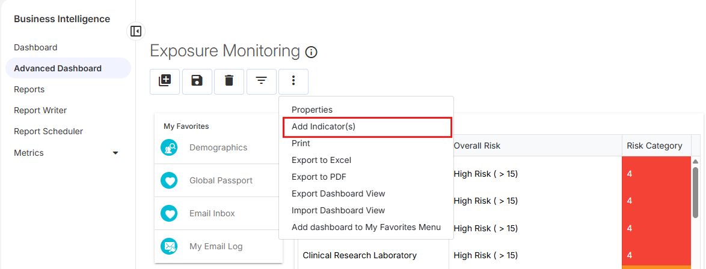
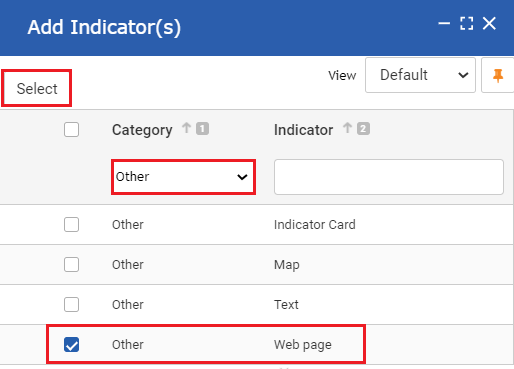
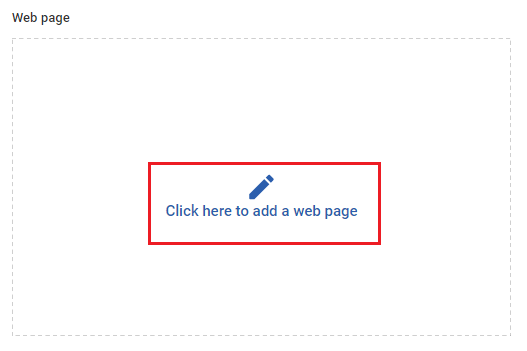
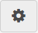
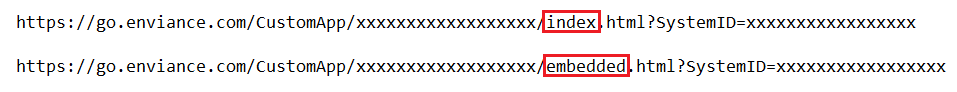
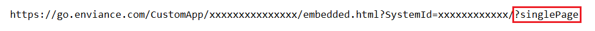
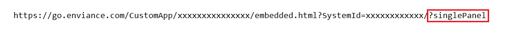

Embedded mode allows users to easily access the Portal directly from Core (GX2). An embedded Portal page or panel will display as an indicator on the Core (GX2) dashboard, where a user can view and interact with data without having to navigate between the platforms.
In order to view and interact with a Portal page or panel from Core (GX2), the user's Core (GX2) and Advanced Calculations (EMS) accounts must be linked. See User Management App for setup instructions.
You cannot work offline using the embedded mode. The Help and Sign Out settings are not available, and you cannot search pages or use page and template libraries.
To add a Portal page or panel to a dashboard:
From the side menu, select Business Intelligence > Advanced Dashboard.
Use the look-up selector at the top right to select a dashboard, or click New to create a new one.
Select Actions > Add Indicator(s). The 'Add Indicators' dialog box will open.

From the Category drop-down menu, select Other.
Place a check mark next to Web page and click Select. An empty Web Page indicator will be added to the dashboard.

Select Click here to add a web page. The 'Set a URL' dialog box will open.

Locate the URL of the Cority page or panel you want to embed.
You must edit the page or panel URL for it to display in embedded mode.
From the Cority Portal, click the Page Settings icon

.
Click Copy Page URL, located at the bottom left.
Paste the URL into a text editor, like Notepad.
In the URL, replace "index" with "embedded".

To embed a single page of the Portal, add the '?singlePage' parameter to the end of the URL:

To embed a single panel of the Portal, add the '?singlePanel' parameter to the end of the URL:

Copy the edited URL and paste it into the 'Set a URL' dialog box.
Click SET. The webpage you entered will display in the indicator.
Click Save to save the dashboard. The configured Portal page or panel will display.